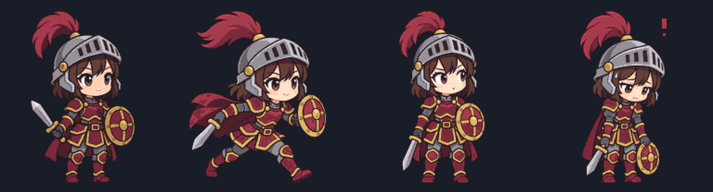

Nine generated key poses; shared 26-colour palette; 88 complete frames. Main loops below run at renderer speeds. Running uses four held key poses plus bounce. Secondary rows repeat main loops. Outlines are approximately one pixel, with local variation.
3× first-frame preview · Full sheet · Composition script · Generation prompts · Checks and file sizes
